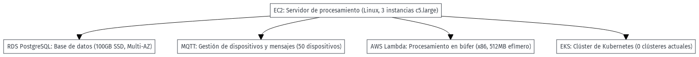

2. Propuesta económica#
2.1. Objetivo:#
La presente propuesta tiene como finalidad implementar una solución en Amazon Web Services (AWS) para que la empresa pueda procesar grandes volúmenes de datos en tiempo real, provenientes de sensores instalados en las instalaciones de sus clientes, y ejecutar algoritmos de machine learning que generen recomendaciones de ahorro energético. Este sistema permitirá a la empresa procesar los datos de sus clientes de forma escalable y eficiente, mejorando su capacidad para ofrecer un servicio de optimización energética a gran escala.
2.2. Descripción de la Solución#
La solución está diseñada para procesar los datos que la empresa recopila de los sensores de consumo energético instalados en las instalaciones industriales de sus clientes. Estos datos serán procesados en tiempo real utilizando Amazon EC2, mientras que los algoritmos de machine learning correrán en contenedores gestionados por Amazon EKS. Los datos históricos serán almacenados en Amazon RDS para su análisis posterior y generación de reportes. AWS Lambda y AWS IoT Core serán responsables de la conectividad y ejecución eficiente de funciones en tiempo real.
Servicios Seleccionados y Ventajas para la Empresa

2.2.1. 1. Amazon EC2#
Descripción: EC2 será utilizado para el procesamiento en tiempo real de los datos que provienen de los sensores instalados en las instalaciones industriales de los clientes. Los algoritmos de machine learning se ejecutarán para analizar el consumo energético en tiempo real y generar recomendaciones de ahorro.
Ventajas:
Permitirá que la empresa ajuste los recursos de procesamiento en función del volumen de datos recibido.
Al usar instancias bajo demanda o reservadas convertibles, la empresa optimizará sus costos a largo plazo.
Costos Estimados:
Costo mensual: $147.18 USD
Costo total (12 meses): $1,766.16 USD
2.2.2. 2. Amazon RDS for PostgreSQL#
Descripción:
Amazon RDS será utilizado para el almacenamiento de los datos históricos de consumo energético de los clientes. Este servicio permite almacenar grandes volúmenes de datos y realizar consultas rápidas, necesarias para generar reportes y análisis históricos que refuercen las recomendaciones de ahorro energético.
Ventajas:
Configuración Multi-AZ para garantizar la disponibilidad en caso de fallos.
Se adapta al crecimiento de los datos de los clientes.
Costos Estimados:
Costo mensual: $3,141.20 USD
Costo total (12 meses): $37,694.40 USD
2.2.3. 3. AWS IoT Core (MQTT)#
Descripción:
AWS IoT Core permitirá la conectividad de los sensores de consumo energético que están instalados en las instalaciones de los clientes. Este servicio garantizará que los datos provenientes de los sensores se envíen de manera segura y en tiempo real al entorno de AWS para su procesamiento.
Ventajas:
Los dispositivos estarán conectados de forma segura, garantizando que los datos sean transmitidos sin interrupciones ni riesgos de seguridad.
Gestiona fácilmente los sensores distribuidos en las instalaciones industriales de los clientes.
Costos Estimados:
Costo mensual: $0.18 USD
Costo total (12 meses): $2.16 USD
2.2.4. 4. AWS Lambda#
Descripción:
AWS Lambda será utilizado para ejecutar funciones en tiempo real, como parte del análisis y procesamiento inicial de los datos. Esto garantiza la ejecución de tareas en tiempo real sin la necesidad de servidores dedicados.
Ventajas:
Se paga solo por el tiempo de ejecución de las funciones, reduciendo los costos de infraestructura.
Lambda ajusta automáticamente los recursos según las necesidades del procesamiento de los datos de los sensores.
Costos Estimados:
Costo mensual: $0.00 USD
Costo total (12 meses): $0.00 USD
2.2.5. 5. Amazon EKS (Elastic Kubernetes Service)#
Descripción:
Amazon EKS gestionará los contenedores donde se ejecutarán los algoritmos de machine learning que proporcionan las recomendaciones de ahorro energético. Proporcionará un entorno escalable y flexible para manejar los algoritmos que procesan los datos en tiempo real.
Ventajas:
Permite gestionar eficientemente los contenedores para adaptarse al crecimiento de los datos y a las necesidades computacionales de los algoritmos de machine learning.
Facilita la gestión automática de los contenedores Docker.
Costos Estimados:
Costo mensual: $73.00 USD
Costo total (12 meses): $876.00 USD
import json
import pandas as pd
# Cargar el archivo JSON
file_path_json = 'My Estimate.json'
with open(file_path_json, encoding='latin-1') as f:
data = json.load(f)
# Extraer la información relevante del archivo JSON
services = data['Grupos']['Servicios']
service_names = []
monthly_costs = []
annual_costs = []
for service in services:
service_names.append(service['Nombre del servicio'])
monthly_costs.append(float(service['Costo del servicio']['mensual']))
annual_costs.append(float(service['Costo del servicio']['12 meses']))
# Crear un DataFrame con los datos de los servicios
df_services = pd.DataFrame({
'Servicio': service_names,
'Costo Mensual (USD)': monthly_costs,
'Costo Total (12 meses)': annual_costs
})
# Calcular el total de costos mensuales y anuales
total_monthly_cost = df_services['Costo Mensual (USD)'].sum()
total_annual_cost = df_services['Costo Total (12 meses)'].sum()
# Crear un DataFrame con la fila de los totales
totals = pd.DataFrame({
'Servicio': ['Total'],
'Costo Mensual (USD)': [total_monthly_cost],
'Costo Total (12 meses)': [total_annual_cost]
})
# Añadir la fila de totales usando pd.concat()
df_services = pd.concat([df_services, totals], ignore_index=True)
# Imprimir el DataFrame final
print(df_services)
Servicio Costo Mensual (USD) Costo Total (12 meses)
0 Amazon RDS for PostgreSQL 3141.20 37694.40
1 MQTT 0.18 2.16
2 AWS Lambda 0.00 0.00
3 Amazon EKS 73.00 876.00
4 Amazon EC2 147.18 1766.16
5 Total 3361.56 40338.72
Al implementar esta infraestructura en AWS, la empresa podrá mejorar su capacidad de procesamiento y ofrecer mejores recomendaciones en tiempo real a sus clientes. Esto, a su vez, le permitirá captar más clientes y expandir su oferta, incrementando sus ingresos y mejorando su rentabilidad. Además, la escalabilidad de la solución asegura que la empresa pagará solo por los recursos que utilice, maximizando la eficiencia de su inversión.
Si la empresa logra captar clientes adicionales o reducir los tiempos de procesamiento de sus recomendaciones, el retorno de inversión se verá reflejado en una mayor eficiencia operativa y una ventaja competitiva en el mercado de optimización energética.